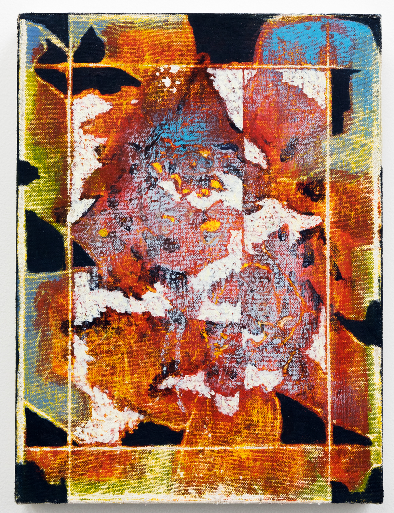

Untitled (Orange 2)
Brennen Steines
Acrylic and Oil on Canvas
12”x9”
About the Work :: “My work examines the material properties of painting and its correspondence with time, process, and the languages of abstraction. Through a series of procedures and responsive decisions, the paintings become a visceral record of their own creation. Marked by materiality and texture, the physicality of the painted surface communicates themes of entropy, deterioration, and reconstruction. Process becomes a vehicle for content, resulting in topographical forms that seem fossilized through the evolution of the painting process.”
-Brennen Steines